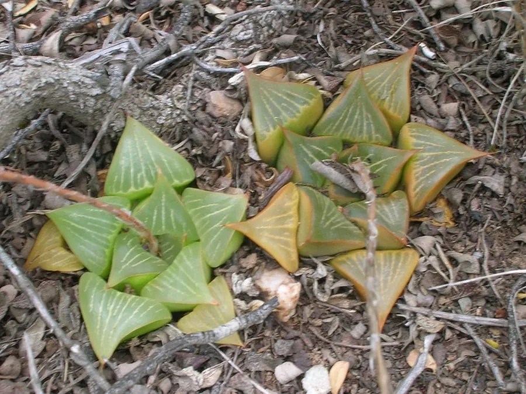

多肉植物 · 植物界
寿 Haworthia retusa

阿福花科瓦苇属多肉，叶片肥厚呈半透明“窗”状，莲座低矮，原产南非，是瓦苇属中窗面通透、耐阴好养的经典品种。
- 分类
- 门被子植物门纲单子叶植物纲目天门冬目科阿福花科属瓦苇属
- 栖息环境
- 南非东开普省干旱地区的岩缝与灌丛下，喜半阴
- 地理分布
- 原产南非东开普省，世界各地盆栽观赏
- 保护级别
- 暂无评估
物种志
寿为阿福花科瓦苇属的多年生肉质草本，无茎或短茎，叶片肥厚、三角状，长 3–5 厘米，先端平截，表面深绿色，顶端有半透明的“窗”状区域，窗面有淡色网纹。叶片排列成低矮的莲座状，直径 6–10 厘米。花梗自叶腋抽出，花小、白色带绿条纹，花期春季；果实为蒴果。
寿原产南非东开普省的干旱地区，喜半阴、温暖干燥和通风良好的环境，耐旱、怕强光暴晒和积水。它叶片顶端的透明窗面能让光线进入叶肉进行光合作用，是瓦苇属适应干旱的典型结构。栽培用颗粒土，生长期保持微润，夏季遮阴、冬季控水，越冬温度 8℃ 以上；繁殖以分株和叶插为主，也可播种。
形态与习性
- 冠幅莲座直径 6–10 厘米
- 叶片三角状，先端平截，有透明窗面
- 花期春季，花小、白色带绿条纹
- 光照喜明亮散射光，忌强光暴晒
- 水分耐旱，生长期保持微润
- 土壤颗粒土为主，排水透气
- 繁殖分株、叶插、播种
- 耐寒冬季需保持 8℃ 以上
趣味知识
- 寿的叶片顶端有半透明“窗”，光线可透入叶肉进行光合作用。
- 瓦苇属植物原产南非，靠肉质叶储水度过旱季。
- 寿怕强光暴晒，适合放在明亮的散射光处养护。